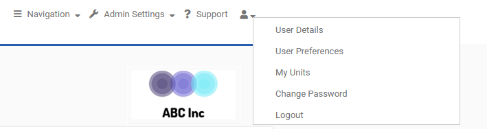
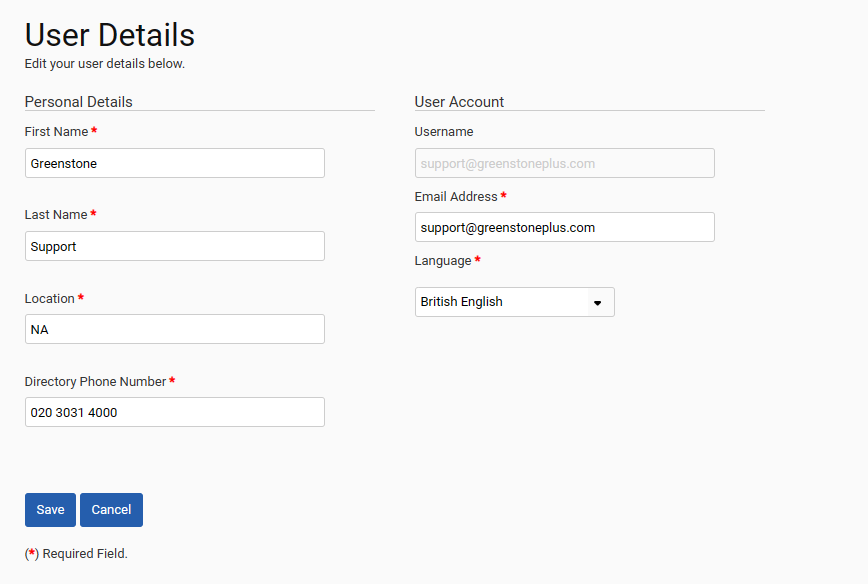
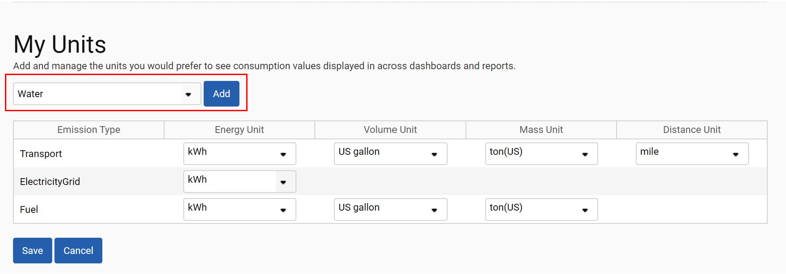
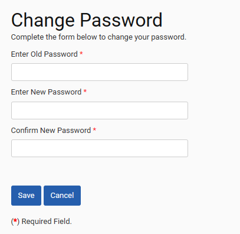

The management of your user account is accessed through the ‘My Account’ menu at the top-right of the screen. It is also here that you can ‘Logout’ from the tool.

Selecting ‘User details’ allows you to amend your user details, as per the screen below.

Selecting ‘User Preferences’ allows you to amend what is displayed on your home page. See Customizing your Homepage for more details.
Selecting ‘My Units’ allows you to specify your preferred units for the system’s dashboards and reports. The screenshot below shows a user that has specified that all transport data with an energy-based unit should be displayed in MWh, volume should be displayed in US gallons, mass in US tons and distance in miles.

To add a new record to this table, select a consumption type from the dropdown menu highlighted above and use the “Add” button. You can specify the preferred units using the dropdowns in each row. Once you have finished adjusting your preferred units, select the “Save” button to confirm your changes, or “Cancel” to undo them.
Selecting ‘Change Password’ allows you to change your password. Please note that passwords must contain:
